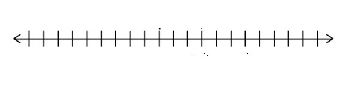
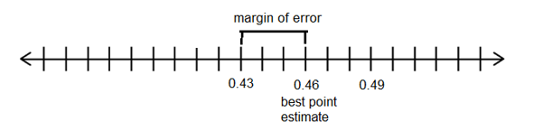
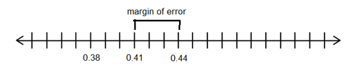
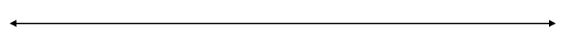
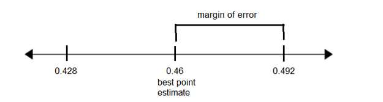
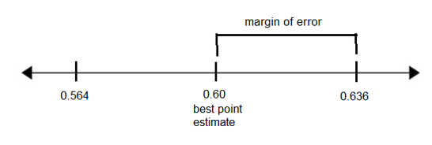
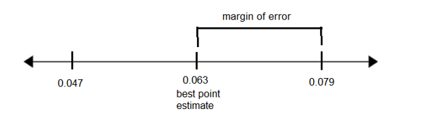
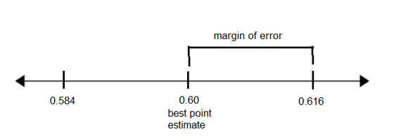
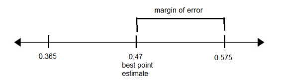

3.4 Confidence Intervals for Population Proportions
According to the final New York Times/CBS News presidential pre-election poll in November 2000, among people likely to vote, George W. Bush drew 46% and Al Gore 41%. Yet, Mr. Bush’s advantage was considered statistically insignificant. The national poll included 862 likely voters and had a margin of sampling error of plus or minus three percentage points.- According to the poll, the percentage of likely voters who planned to vote for Mr. Bush was 46% +/- 3%.
- What was the best point estimate for the percentage of likely voters supporting Mr. Bush?
46% - What was the lower limit of the confidence interval for Bush voters?
46% - 3% = 43% - What was the upper limit of the confidence interval for Bush voters?
46% + 3% = 49% - Write the confidence interval for the percentage of Bush voters using interval notation.
(43%, 49%) - Graph the confidence interval on a number line and label the best point estimate and the margin of error.


- What was the best point estimate for the percentage of likely voters supporting Mr. Bush?
- According to the poll, 41% of likely voters planned to vote for Mr. Gore, with a 3% margin of error.
- What was the lower limit of the confidence interval for Gore voters?
41% - 3% = 38% - What was the upper limit of the confidence interval for Gore voters?
41% + 3% = 44% - Write the confidence interval for the percentage of Gore voters using interval notation.
(38%, 44%) - Write the confidence interval for the percentage of Gore voters in the form \(\hat{p}\pm E\).
\(41\%\pm3\%\) or \(0.41\pm 0.03\) - Graph the confidence interval on a number line and label the best point estimate and the margin of error.

- What was the lower limit of the confidence interval for Gore voters?
- Why was Mr. Bush’s advantage considered statistically insignificant?
Because taking into account the margin of error, the confidence intervals for each candidate’s vote overlapped. For example, 43.5% of the vote was within the confidence interval for both Mr. Bush and Mr. Gore.
- According to a Pew Research Center survey of 1,453 U.S. teens ages 13 to 17 and their parents conducted in 2023, the confidence interval for the percentage of teens who say their parent is at least sometimes distracted by their phone when they’re trying to talk to them is (42.8%, 49.2%).
- What is the lower limit of the confidence interval?
42.8% - What is the upper limit of the confidence interval?
49.2% - Graph the confidence interval on a number line and label the best point estimate and the margin of error.


- What is the best point estimate for the percentage of teens who say their parent is at least sometimes distracted by their phone when they’re trying to talk to them?
\(\frac{42.8+49.2}2=46\%\) - What is the margin of error in the survey?
49.2% - 46% = 3.2% - If the confidence level of the survey was 99%, how should we interpret the confidence interval (42.8%, 49.2%)?
We are 99% confident that the true percentage of U.S. teens who say their parents are at least sometimes distracted by their phone when they’re trying to talk to them is between 42.8% and 49.2%. - Could the true percentage of teens who say their parent is at least sometimes distracted by their phone be 48%? How do you know?
Yes, because 48% is between 42.8% and 49.2%.
When constructing a confidence interval, we use data from a sample to estimate information about the population. For a population proportion, we use the binomial theorem to approximate a normal distribution and therefore use z-scores when constructing the confidence interval. The sample must be large enough so that the number of successes and failures are both greater than 5.
- What is the lower limit of the confidence interval?
- For a class project, a political science student at a large university wants to estimate the percent of students at their university who are registered voters. The student surveys 500 students and finds that 300 are registered voters.
- What is the population of the study?
All students at this university - What is the sample for the study?
300 students at this university - What is the best point estimate for the proportion of all students at the university who are registered voters?
300/500 = 0.6 - Using the formula, find the margin of error in the study if the political science student wants to be 90% confident in the results.
\(E=z_\frac\alpha2\left(\sqrt{\frac{\displaystyle\widehat p\widehat q}n}\right)\)
\(E=1.64\left(\sqrt{\frac{0.6\ast0.4}{500}}\right)=0.036\) - For 90% confidence, critical value \(z_\frac\alpha2=\)
1.64 - For 95% confidence, critical value \(z_\frac\alpha2=\)
1.96 - For 99% confidence, critical value \(z_\frac\alpha2=\)
2.576 - Use the sample data to construct a 90% confidence interval estimate of the proportion of students who are registered voters. What are the upper and lower limits of the confidence interval?
0.6 + 0.036 = 0.636 and 0.6 – 0.036 = 0.564 - Graph the confidence interval on a number line and label the best point estimate and the margin of error.

- Write the confidence interval using interval notation.
(0.564, 0.636) - Write the confidence interval in the form \(\hat{p}\pm E\) .
0.60 ± 0.036 - Write the confidence interval using inequality notation.
0.564 < p < 0.636 - What does the confidence interval tell us? Complete this sentence: “We are 90% confident that
the true proportion of registered voters at the university is between 56.4% and 63.6%.“ - Based on the results, are a majority of students at the university registered to vote? How do you know?
Yes, because the lower limit of the confidence interval is 56.4% which is above 50%.
Note: Use the normal calculator to find the critical value z-score used in the formula.
- What is the population of the study?
- The EPA considers indoor radon levels above 4 picocuries per liter (pCi/L) of air to be high enough to warrant amelioration efforts. Tests in a sample of 872 Knox County homes found 6.3% of these sampled households to have indoor radon levels above 4 pCi/L.
- What is the population of the study?
All Knox County homes - What is the sample in the study?
872 Knox County homes - What is the best point estimate for the percentage of Knox County homes with indoor radon levels above 4 pCi/L?
6.3% - In the sample of 872 Knox County homes, how many had indoor radon levels above 4 pCi/L?
(0.063)(872) = 55 homes - Use StatCrunch to construct a 95% confidence interval estimate for the percentage of Knox County homes with indoor radon levels above 4 pCi/L. What are the lower and upper limits of the confidence interval?
0.047 and 0.079, or 4.7% and 7.9% - Write the confidence interval using interval notation.
(0.047, 0.079) or (4.7%, 7.9%) - Graph the confidence interval on a number line and label the best point estimate and the margin of error.

- What is the margin of error for this confidence interval?
0.079 – 0.063 = 0.016 or 1.6% - Write the confidence interval in the form \(\hat{p}\pm E\).
\(0.063\;\pm\;0.016\;\)or\(\;6.3\%\;\pm\;1.6\%\\\) - What does the confidence interval tell us? Complete this sentence: “We are 95% confident that
the true percentage of Knox County homes with indoor radon levels above 4 pCi/L is between 4.7% and 7.9%. - Could the true percentage of Knox County homes with elevated radon levels be 10%?
Not likely since the upper limit of the confidence interval is 7.9%.
- What is the population of the study?
- The American Trends Panel is a nationally representative panel of randomly selected U.S. adults. In 2024, 60% of the 5140 American Trends panelists had a positive view of the U.S. military.
- Construct a 98% confidence interval estimate for the proportion of all U.S. adults who have a positive view of the military.
(0.584, 0.616) - Calculate the margin of error. (Draw a graph to help find this.)

0.616 – 0.6 = 0.016 or 1.6% - Complete the statement: “We are 98% confident that
the true proportion of U.S. adults who have a positive view of the military is between 0.584 and 0.616.“ - Is it correct for a news media outlet to report that approximately 3 out of every 5 U.S. adults have a positive view of the military? Why or why not?
Yes, since 3/5 = 0.6 and that is the best point estimate from the study.
- Construct a 98% confidence interval estimate for the proportion of all U.S. adults who have a positive view of the military.
- A news article reported the results of a survey of 150 senior executives. The author of the article was 99% confident that between 36.5% and 57.5% of all senior executives believe the most common job interview mistake is to have little or no knowledge of the company.
- What is the population of the study?
All senior executives - What is the sample in the study?
150 senior executives - What is the best point estimate (also called the sample proportion \(\hat{p}\)) for the percentage of senior executives who agree this is the most common job interview mistake?
\(\frac{0.365+0.575}2=0.47=47\%\\\) 
- What is the margin of error in the survey results?
0.575 – 0.47 = 0.105 or 10.5% - What does the confidence interval (36.5%, 57.5%) tell us?
We are 99% confident that the true percentage of senior executives who believe the most common job interview mistake is having little or no knowledge of the company is between 36.5% and 57.5%. - Is it correct to say that the majority of senior executives believe the most common job interview mistake is to have little knowledge of the company? Why or why not?
No, because the lower limit of the confidence interval is 36.5% which is below 50%.
- What is the population of the study?
-
What is the Proportion of Land on the Earth’s Surface?
We are going to generate random latitude and longitude coordinates using the site: Random.org
- Count the total number of Coordinate Sets in your sample. n = ________
- Count the number of Land Coordinates in your sample. x = __________
(how many of the sets of coordinates corresponded to land?)
- Calculate the proportion of LAND in your sample. \(\hat{p}=\frac{x}{n}=\) ___________
- Calculate the proportion of WATER in your sample \(\hat{q}=1-\hat{p}=\) ___________
- Would you be willing to bet money that your sample proportion exactly equals the proportion of land on Earth’s surface (population)? ________________ What if we estimated a range of values in which this proportion may fall?________________ Let’s look at calculating two different intervals that allow for a margin of error.
- Use your sample data to construct a 90% confidence interval for the proportion of land on the Earth’s surface.__________
- Does this confidence interval contain the true population proportion of 29%? __________
- What percentage of students in your class have confidence intervals that contain the true population proportion of 29%? __________
- Use your sample data to construct a 99% confidence interval for the proportion of land on the Earth’s surface. _________________
- Does this confidence interval contain the true population proportion of 29%? __________
- What percentage of students in your class have confidence intervals that contain the true population proportion of 29%? __________
- If your grade depended on the true proportion of land on Earth’s surface actually being within the interval given in your statement, which statement would you submit? Put a check beside your statement choice.